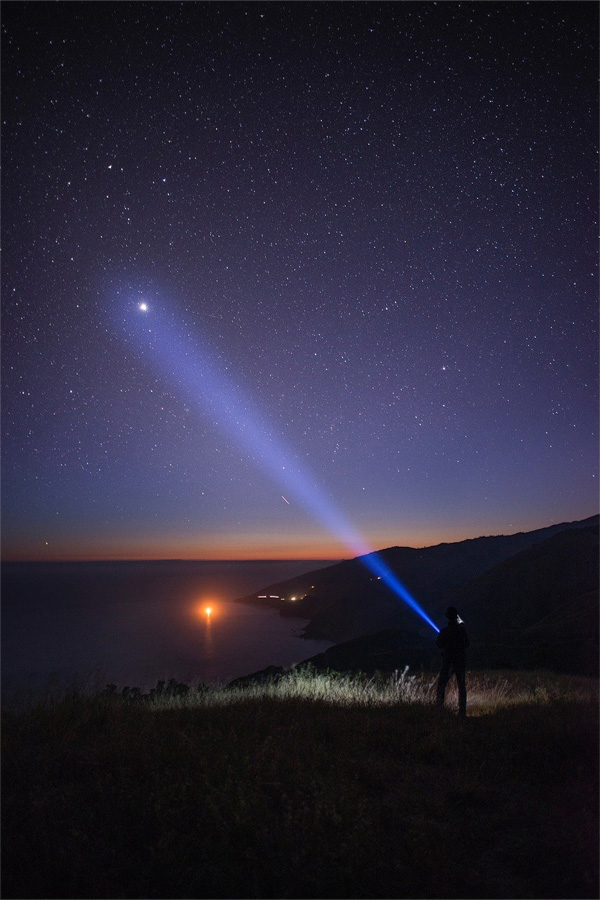
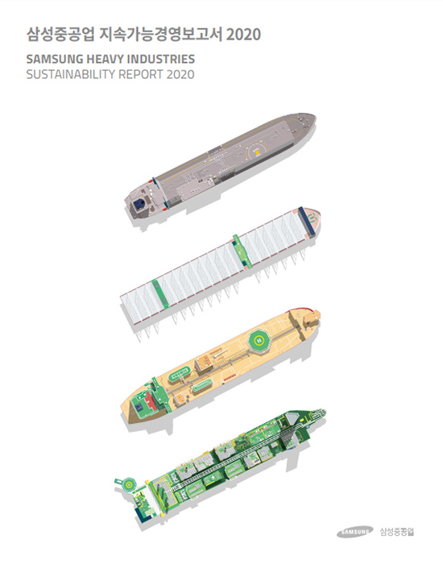

home>경영이념>지속가능
지속가능
- 2022 지속가능 경영보고서
- 지속가능한 성장과 발전을 추구하는 삼섬중공업의 활동과 성과를 확인하실 수 있습니다.
2022 지속가능 경영 보고서 구성
SUSTAINABILITY
- COVID-19대응활동
- 지속가능경영추진체계
- 중대성평가
- 
-
- 2022 지속가능경영보고서 구성
- SHI's value creation
- 회사 소개, 건조 및 인도 현황, 제품 소개 등의 일반 현황과 UN 지속가능발전목표 연계, 중대성 평가 내용을 담았습니다.
- ESG vision & strategy
- 환경, 안전, 준법경영을 선도하는 세계 최고 조선소를 목표로 친환경 선도, 지속가능 공동체 실현, ESG 경영 고도화를 위한 6대 추진 전략을 담았습니다./dd>
- sustainability performances
- E·S·G 각 부문별 지속가능경영 활동을 소개하고, 해당 활동의 2021년 성과 및 관리 방법을 담았습니다.
- Appendix
- 감사보고서, GRI Index, 온실가스배출량 검증 성명서 등의 부가 정보를 제공합니다.

닫기
PDF FILE DOWNLOAD